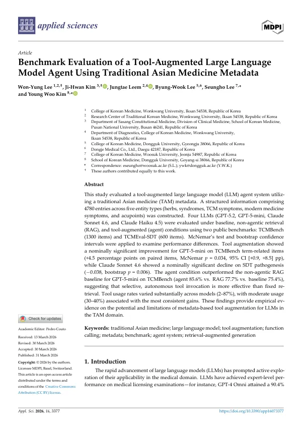

Benchmark Evaluation of a Tool-Augmented Large Language Model Agent Using Traditional Asian Medicine Metadata
Lee WY, Kim JH, Leem J, Lee BW, Lee S, Kim YW
Applied Sciences 16(7):3377

첫 장 · 오픈액세스First page · open access
논문 소개Summary
전통 아시아의학 메타데이터를 도구로 붙인 대규모언어모델 에이전트의 벤치마크 평가 연구입니다. 약재·변증·증상·경혈 등 다섯 유형 4780건의 구조화된 정보를 만들고, 네 모델을 기본·검색증강·도구증강 세 조건에서 TCMBench 1300문항과 TCMEval-SDT 600문항으로 견주었습니다. GPT-5-mini는 TCMBench 용어 문항에서 4.5%p 올랐고, 에이전트 조건 85.6%가 검색증강 77.7%와 기본 75.4%를 앞서 고정된 검색보다 스스로 고르는 도구 호출이 나았습니다. 반면 Claude Sonnet 4.6은 변증 병기 항목에서 0.038 떨어졌습니다. 도구 사용률은 모델에 따라 2~87%로 갈렸습니다.
A benchmark evaluation of a tool-augmented large language model agent built on traditional Asian medicine metadata. Structured information comprising 4780 entries across five entity types - herbs, syndromes, symptoms and acupoints among them - was constructed, and four models were compared under baseline, retrieval-augmented and tool-augmented conditions on TCMBench (1300 items) and TCMEval-SDT (600 items). GPT-5-mini gained 4.5 percentage points on TCMBench term-related items, and its agent condition (85.6%) outperformed both retrieval augmentation (77.7%) and baseline (75.4%), so selective, autonomous tool invocation beat fixed retrieval. Claude Sonnet 4.6, by contrast, declined by 0.038 on syndrome differentiation pathogenesis items. Tool usage rates varied from 2% to 87% across models.
인용Cite
Lee WY, Kim JH, Leem J, Lee BW, Lee S, Kim YW. Benchmark Evaluation of a Tool-Augmented Large Language Model Agent Using Traditional Asian Medicine Metadata. Applied Sciences. 2026;16(7):3377. doi:10.3390/app16073377